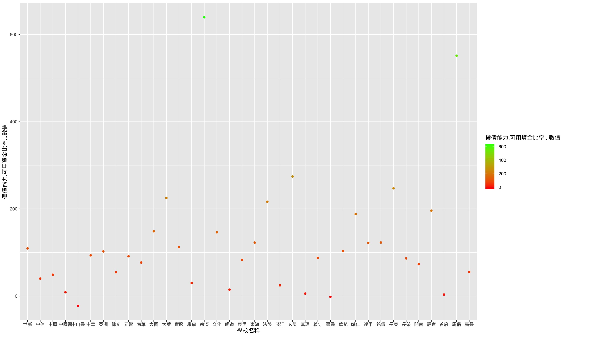

怕學校bang不見
私校燈號警示
首府大學!!!!!!!（warning)
以營運能力及償還能力顯示私立大學的財務狀況，燈號依比值排序方式：低到高排序，以學雜費收入變動率為例，該指標是用來分析學校營運之主要收入來源變動情況，該數據如果為負數，顯示學校營運收入呈下滑現象，營運風險將上升。 以各圖表總結分析，首府大學為各私立大學中具高機率最快退場之大學。



以營運能力及償還能力顯示私立大學的財務狀況，燈號依比值排序方式：低到高排序，以學雜費收入變動率為例，該指標是用來分析學校營運之主要收入來源變動情況，該數據如果為負數，顯示學校營運收入呈下滑現象，營運風險將上升。 以各圖表總結分析，首府大學為各私立大學中具高機率最快退場之大學。